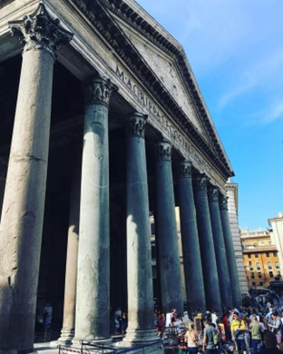
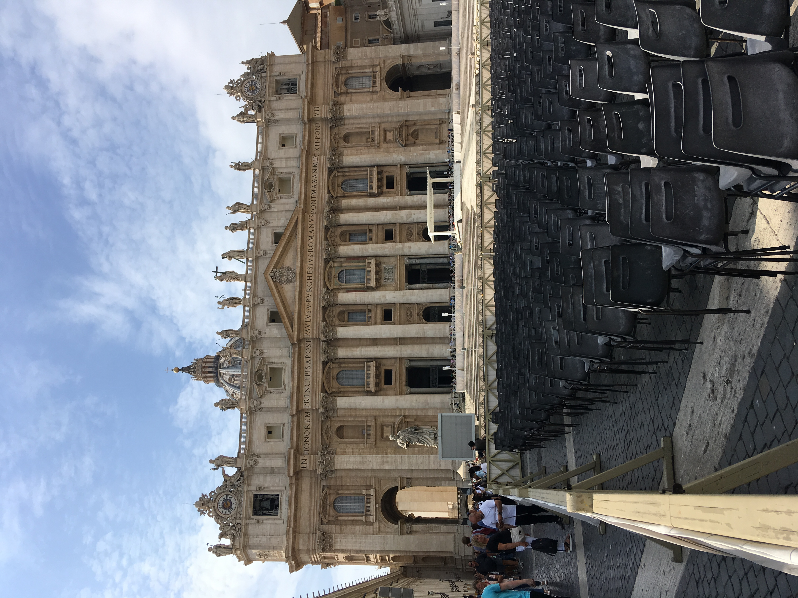
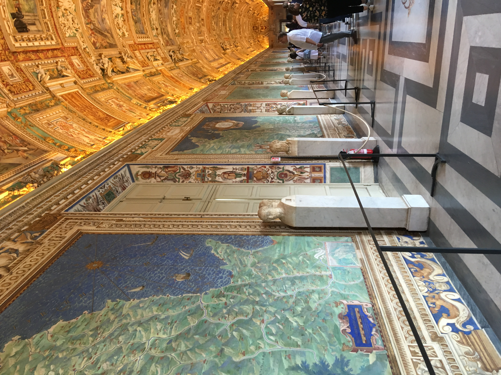
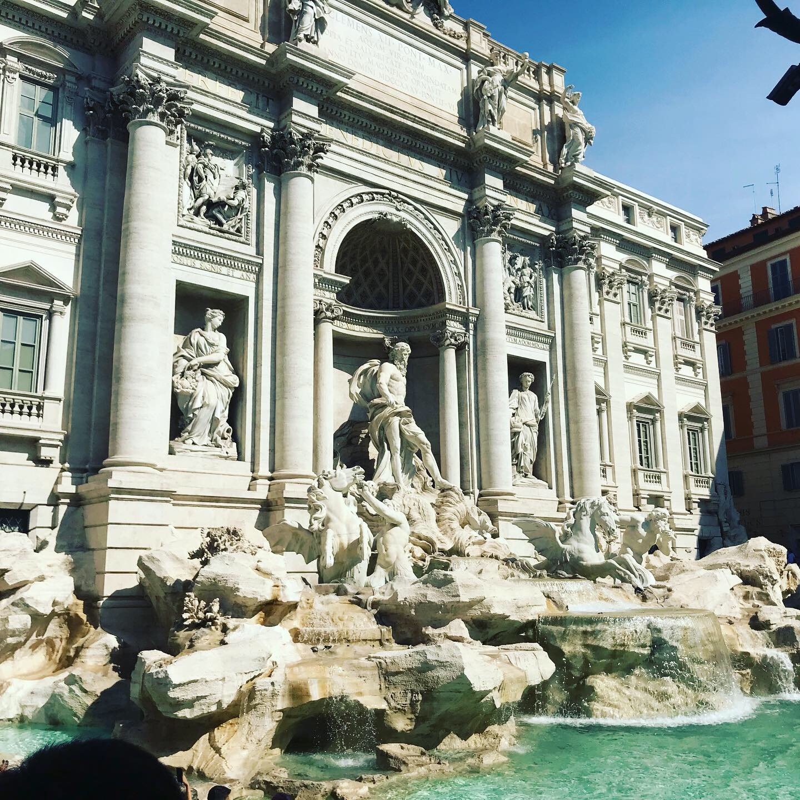

Intro
Rome offers a rich mix of ancient history, art, and lively culture. Highlights like the Vatican, Pantheon, Trevi Fountain, and Via Giulia make it a favorite spot for visitors
Popular Attactions
- Pantheon
- Via Giulia
- Vatican City
- Trevi Fountain
Patheon
The Pantheon in Rome symbolizes Italian culture and history, showcasing ancient engineering and enduring as a place of worship through the centuries. 
Via Giulia

Via Giulia is one of Rome’s most charming historic streets. It offers a peaceful walk lined with beautiful buildings, ivy-covered walls, churches, and art studios.
Lonely Planet, Via GiuliaVatican City
The Hall of Maps in Vatican City displays beautifully detailed 16th-century frescoes of Italy’s regions, blending art and history in a breathtaking gallery.
Rick Steve's Classroom, Vatican City  Trevi Fountain
The Trevi Fountain in Rome is a beautiful Baroque masterpiece and famous spot where people toss coins to make a wish to come back again.
Go Ahead Tours, Trevi Fountain 